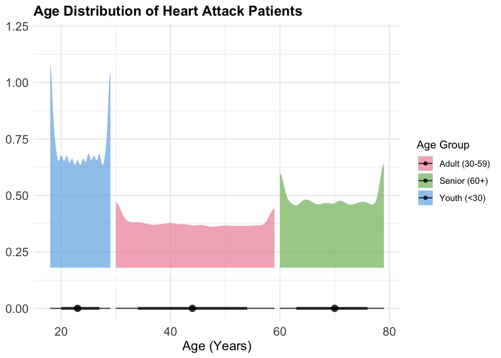
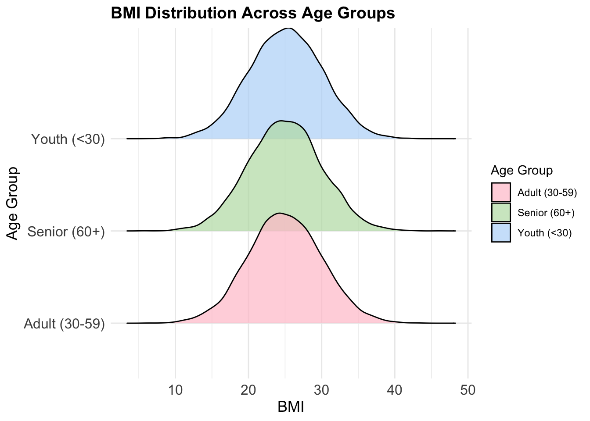
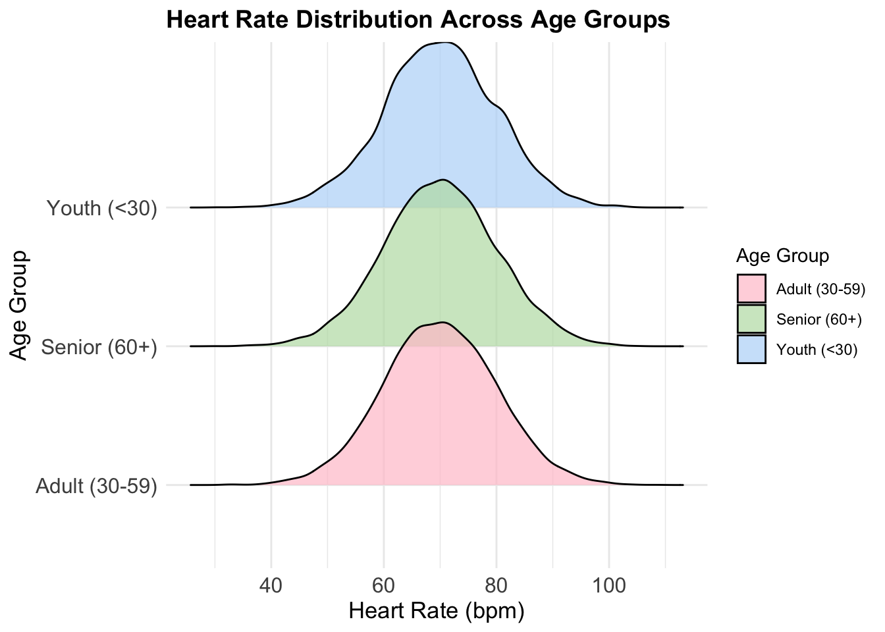
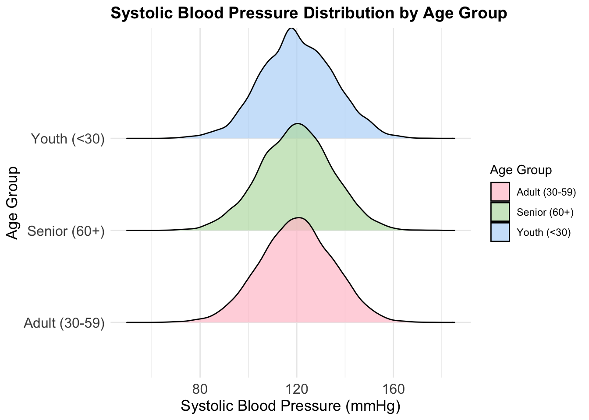
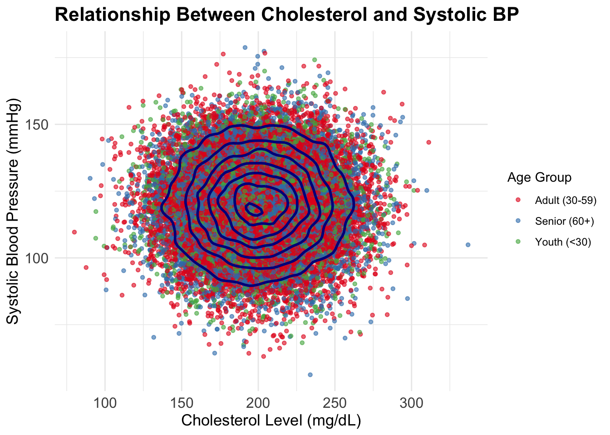
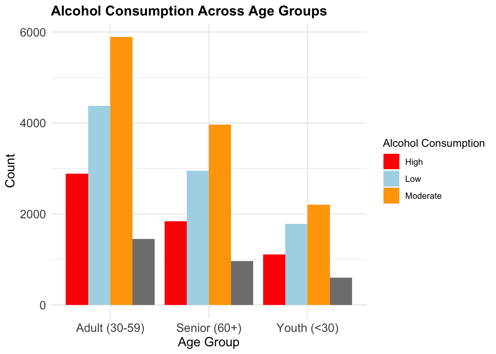

pacman::p_load(
tidyverse,
ggthemes,
ggridges,
ggdist,
colorspace,
patchwork)Take_Home_Exercise_1: Creating data visualisation beyond default
1 Overview
Setting the scene
An international media company that publishes weekly content on digital platforms is planning to release articles on a theme regarding Heart Attack in Japan.
The task
Assuming the role of the graphical editor of the media company, the task is prepare data visualisation for the article using appropriate tidyverse family of packages and the statistical graphics must be prepared using ggplot2 and its extensions.
Introduction
This article analyzes the Heart Attack in Japan: Youth vs Adult dataset to identify key risk factors and trends in heart attack occurrences. The goal is to compare heart attack rates between youth and adults and explore the influence of variables like age, gender, and lifestyle factors.
2 Getting started
Importing packages
tidyverse: acts as the core data science package for data manipulation, cleaning, visualization
ggthemes: customizing themes for ggplot2
ggridges: to plot ridgeline plots showing distribution trends
ggdist: to plot distributions and uncertainty visualisations
colorspace: advanced color selection for better differentiation & accessibility
Importing data
The dataset is loaded using read_csv from the readr package within tidyverse
heart_data <- read_csv("data/japan_heart_attack_dataset.csv")3 Data Preparation
Before doing EDA, we check for missing values, column types and data inconsistencies.
Checking for missing values
We use the colSums() to check for missing values in the dataset.
colSums(is.na(heart_data)) Age Gender Region
0 0 0
Smoking_History Diabetes_History Hypertension_History
0 0 0
Cholesterol_Level Physical_Activity Diet_Quality
0 0 0
Alcohol_Consumption Stress_Levels BMI
0 0 0
Heart_Rate Systolic_BP Diastolic_BP
0 0 0
Family_History Heart_Attack_Occurrence Extra_Column_1
0 0 0
Extra_Column_2 Extra_Column_3 Extra_Column_4
0 0 0
Extra_Column_5 Extra_Column_6 Extra_Column_7
0 0 0
Extra_Column_8 Extra_Column_9 Extra_Column_10
0 0 0
Extra_Column_11 Extra_Column_12 Extra_Column_13
0 0 0
Extra_Column_14 Extra_Column_15
0 0 There are no missing values in this dataset so we can proceed to the next step.
Removing unnecessary columns
There are 15 extra columns (Extra_Column_1 to Extra_Column_15) which does not contribute to our analysis. We remove them using the following code:
heart_data <- heart_data %>%
select(-starts_with("Extra_Column"))Mutating the dataset
We categorise the Age into groups to ease the comparisons when plotting in plots like bar charts, boxplots etc.
Youth: <30
Adult: 30-59
Senior: 60+
heart_data <- heart_data %>%
mutate(
age_group = case_when(
Age < 30 ~ "Youth (<30)",
Age >= 30 & Age < 60 ~ "Adult (30-59)",
Age >= 60 ~ "Senior (60+)"
)
)Since Body Mass Index (BMI) is a key cardiovascular risk factor and there are benchmarks which are universally categorised (BMI), we can categorise our BMI values as well.
Underweight: <18.5
Normal: 18.5 - 24.9
Overweight: 25-29.9
Obese >=30
heart_data <- heart_data %>%
mutate(
BMI_Category = case_when(
BMI < 18.5 ~ "Underweight",
BMI >= 18.5 & BMI <= 24.9 ~ "Normal",
BMI >= 25 & BMI <= 29.9 ~ "Overweight",
BMI >= 30 ~ "Obese"
)
)Previewing the dataset
We use head() function to preview the first few rows of the dataset.
head(heart_data, 200)# A tibble: 200 × 19
Age Gender Region Smoking_History Diabetes_History Hypertension_History
<dbl> <chr> <chr> <chr> <chr> <chr>
1 56 Male Urban Yes No No
2 69 Male Urban No No No
3 46 Male Rural Yes No No
4 32 Female Urban No No No
5 60 Female Rural No No No
6 25 Female Rural No No No
7 78 Male Urban No Yes Yes
8 38 Female Urban Yes No No
9 56 Male Rural No No Yes
10 75 Male Urban No No No
# ℹ 190 more rows
# ℹ 13 more variables: Cholesterol_Level <dbl>, Physical_Activity <chr>,
# Diet_Quality <chr>, Alcohol_Consumption <chr>, Stress_Levels <dbl>,
# BMI <dbl>, Heart_Rate <dbl>, Systolic_BP <dbl>, Diastolic_BP <dbl>,
# Family_History <chr>, Heart_Attack_Occurrence <chr>, age_group <chr>,
# BMI_Category <chr>After some cleaning, the dataset is now ready for analysis. Lets take a final glimpse on the dataset.
glimpse(heart_data)Rows: 30,000
Columns: 19
$ Age <dbl> 56, 69, 46, 32, 60, 25, 78, 38, 56, 75, 36, 40…
$ Gender <chr> "Male", "Male", "Male", "Female", "Female", "F…
$ Region <chr> "Urban", "Urban", "Rural", "Urban", "Rural", "…
$ Smoking_History <chr> "Yes", "No", "Yes", "No", "No", "No", "No", "Y…
$ Diabetes_History <chr> "No", "No", "No", "No", "No", "No", "Yes", "No…
$ Hypertension_History <chr> "No", "No", "No", "No", "No", "No", "Yes", "No…
$ Cholesterol_Level <dbl> 186.4002, 185.1367, 210.6966, 211.1655, 223.81…
$ Physical_Activity <chr> "Moderate", "Low", "Low", "Moderate", "High", …
$ Diet_Quality <chr> "Poor", "Good", "Average", "Good", "Good", "Go…
$ Alcohol_Consumption <chr> "Low", "Low", "Moderate", "High", "High", "Hig…
$ Stress_Levels <dbl> 3.644786, 3.384056, 3.810911, 6.014878, 6.8068…
$ BMI <dbl> 33.96135, 28.24287, 27.60121, 23.71729, 19.771…
$ Heart_Rate <dbl> 72.30153, 57.45764, 64.65870, 55.13147, 76.667…
$ Systolic_BP <dbl> 123.90209, 129.89331, 145.65490, 131.78522, 10…
$ Diastolic_BP <dbl> 85.68281, 73.52426, 71.99481, 68.21133, 92.902…
$ Family_History <chr> "No", "Yes", "No", "No", "No", "No", "No", "No…
$ Heart_Attack_Occurrence <chr> "No", "No", "No", "No", "No", "No", "No", "No"…
$ age_group <chr> "Adult (30-59)", "Senior (60+)", "Adult (30-59…
$ BMI_Category <chr> "Obese", "Overweight", "Overweight", "Normal",…4 Exploratory Data Analysis (EDA)
EDA 1: Age Distribution of Heart Attack Patients
Type of Chart: Half-Eye Density Plot
This half-eye plot displays the distribution of heart attack patients by age group while overlaying individual data points and density estimates.
The half-eye plot is built using stat_halfeye() within the ggdist package.
The full age distribution is displayed without histograms or bins
Combining boxplox and density visualization for enhanced insights
Helps detect outliers and variations in the data
Individual cases are highlighted with jittered black points
Show the code
ggplot(heart_data, aes(x = Age, y = 0, fill = age_group)) +
ggdist::stat_halfeye(adjust = 1.5, justification = -0.2, point_color = "black", alpha = 0.7) +
scale_fill_manual(values = colorspace::qualitative_hcl(3, palette = "Set 2")) +
labs(title = "Age Distribution of Heart Attack Patients",
x = "Age (Years)", y = NULL, fill = "Age Group") +
theme_minimal() +
theme(legend.position = "right",
plot.title = element_text(size = 14, face = "bold"),
axis.text = element_text(size = 12),
axis.title = element_text(size = 13))
Why this matters?
- Help identify the most vulnerable age groups, allowing targeted prevention strategies
Note
Observations / Insights
Adults (30-59) have the highest heart attack frequency, making them the most at risk age group
Seniors (60+) show a steady occurrence, confirming age as a major risk factor
Youth (<30) have significantly fewer cases, but they still exist, reinforcing the role of other factors like genetics or stress which we will analyse later
EDA 2: BMI, Heart Rate, Blood Pressure Distributions
Type of Chart: Ridgeline Density Plots
Ridgeline plots visualizes the distribution of BMI, heart rate, and blood pressure across different age groups, allowing easy comparison
geom_density_ridges() was used to create the ridgeline plot
Ridgeline plots replaces the need of histograms by minimising it into a single visualisation for easier comparison
Ridgeline plots shows full range, skewness and density peaks unlike boxplots which only displays the quartiles
Ridgeline plots allows quick assessment of differences between Youth, Adults and Seniors
Show the code
ggplot(heart_data, aes(x = BMI, y = age_group, fill = age_group)) +
ggridges::geom_density_ridges(alpha = 0.7, scale = 1.2) +
scale_fill_manual(values = colorspace::qualitative_hcl(3, palette = "Pastel 1")) +
labs(title = "BMI Distribution Across Age Groups",
x = "BMI", y = "Age Group", fill = "Age Group") +
theme_minimal() +
theme(legend.position = "right",
plot.title = element_text(size = 14, face = "bold"),
axis.text = element_text(size = 12),
axis.title = element_text(size = 13))
Show the code
ggplot(heart_data, aes(x = Heart_Rate, y = age_group, fill = age_group)) +
ggridges::geom_density_ridges(alpha = 0.7, scale = 1.2) +
scale_fill_manual(values = colorspace::qualitative_hcl(3, palette = "Pastel 1")) +
labs(title = "Heart Rate Distribution Across Age Groups",
x = "Heart Rate (bpm)", y = "Age Group", fill = "Age Group") +
theme_minimal() +
theme(legend.position = "right",
plot.title = element_text(size = 14, face = "bold"),
axis.text = element_text(size = 12),
axis.title = element_text(size = 13))
Show the code
ggplot(heart_data, aes(x = Systolic_BP, y = age_group, fill = age_group)) +
ggridges::geom_density_ridges(alpha = 0.7, scale = 1.2) +
scale_fill_manual(values = colorspace::qualitative_hcl(3, palette = "Pastel 1")) +
labs(title = "Systolic Blood Pressure Distribution by Age Group",
x = "Systolic Blood Pressure (mmHg)", y = "Age Group", fill = "Age Group") +
theme_minimal() +
theme(legend.position = "right",
plot.title = element_text(size = 14, face = "bold"),
axis.text = element_text(size = 12),
axis.title = element_text(size = 13))
Why this matters?
- Help identify key risk factors for heart attacks and highlight important lifestyle interventions
Note
Observations / Insights
Adults (30-59) have the widest distribution in all three variables, showing greater variability in heart attack risk factors.
Seniors (60+) have more centralized distributions, suggesting better regulation via medication or lifestyle
Youth (<30) have more stable, lower values across BMI, heart rate, and BP
EDA 3: Relationship between Cholesterol and Blood pressure
Type of Chart: Scatter Plot with Density Contours
This scatter plot with overlaid density contours visualizes the relationship between cholesterol levels and systolic blood pressure
geom_point() was used to make clearer individual cases
geom_density_2d() was used to highlight cluster regions by providing a heatmap-like view
This visualisation help avoid overplotting when many points overlap
Show the code
ggplot(heart_data, aes(x = Cholesterol_Level, y = Systolic_BP, color = age_group)) +
geom_point(alpha = 0.6, size = 1.2) + # Increased alpha & size for better visibility
geom_density_2d(color = "darkblue", size = 1) + # Darker contours for readability
scale_color_manual(values = c("Adult (30-59)" = "#E41A1C", # Strong Red
"Senior (60+)" = "#377EB8", # Deep Blue
"Youth (<30)" = "#4DAF4A")) + # Vibrant Green
labs(title = "Relationship Between Cholesterol and Systolic BP",
x = "Cholesterol Level (mg/dL)",
y = "Systolic Blood Pressure (mmHg)",
color = "Age Group") +
theme_minimal() +
theme(legend.position = "right",
plot.title = element_text(size = 16, face = "bold"),
axis.text = element_text(size = 12),
axis.title = element_text(size = 13))
Why this matters?
- High cholesterol and elevated systolic blood pressure are major contributors to heart attacks and cardiovascular disease
Note
Observations / Insights
There is a positive correlation between cholesterol and blood pressure
Seniors (60+) tend to cluster around higher cholesterol and blood pressure levels
Adults (30-59) exhibits the widest spread, meaning there are a mix of healthy and high-risk individuals
Youth (<30) show more scattered, lower values, indicating they are not high risk at the moment
EDA 4: Impact of Lifestyle Factors (Alcohol) on Heart Attack Risk
Type of Chart: Grouped Bar Chart
The grouped bar chart displays the distribution of alcohol consumption levels (Low, Moderate, High) across three age groups (Youth, Adults, Seniors)
The grouped bar chart is built using geom_bar() and allows quick identification of which group has the highest alcohol intake
Show the code
ggplot(heart_data, aes(x = age_group, fill = Alcohol_Consumption)) +
geom_bar(position = "dodge") +
scale_fill_manual(values = c("Low" = "lightblue", "Moderate" = "orange", "High" = "red")) +
labs(title = "Alcohol Consumption Across Age Groups",
x = "Age Group", y = "Count", fill = "Alcohol Consumption") +
theme_minimal() +
theme(legend.position = "right",
plot.title = element_text(size = 14, face = "bold"),
axis.text = element_text(size = 12),
axis.title = element_text(size = 13))
Why this matters?
- Excessive alcohol consumption may be a considered a factor therefore identifying the age group with excessive consumption is important
Note
Observations / Insights
Adults (30-59) have the highest proportion of high alcohol consumption, which could be linked to work stress, social drinking culture or lifestyle choices.
Seniors (60+) tend to consume alcohol at a moderate level, possibly due to health consciousness or medical restrictions.
Youth (<30) have the lowest alcohol consumption overall, likely due to legal restrictions or lower social drinking frequency.
5 Summary / Conclusion
This task leveraged data visualization techniques to explore heart attack risk factors across different age groups in Japan. By employing advanced ggplot2-based visualizations, the analysis provided clear, data-driven insights into the relationships between key health indicators as well as the distributions.
Note
Adults(30-59) require targeted prevention efforts, as they exhibit the highest risk factors for heart attacks. Encouraging regular health screenings, weight management, and stress reduction strategies could mitigate risks
Seniors (60+) should prioritize managing hypertension and cholesterol, as these factors strongly correlate with heart attack prevalence. Medical interventions, lifestyle adjustments, and controlled alcohol intake should be considered
Youth(<30) should be educated about early warning signs and lifestyle risk, particularly for high-stress individuals who may develop cardiovascular conditions early